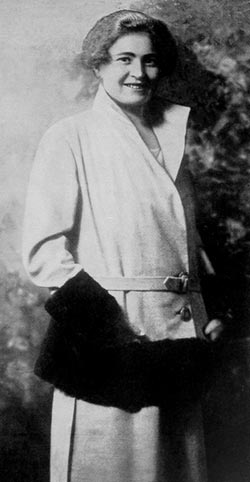

- 7 -
it faut que les hommes supérieurs déclarent la guerre.
NIETZSCHE
ĐÁM MÂY BÁO HIỆU CƠN GIÔNG TỐ
Từ tháng 4 năm 1939, Đức quốc xã đã cho theo một kế hoặch đặt tên là « kế hoạch trắng » (Plan blanc) với lệnh Quốc Trưởng giao phó cho quân đội sửa soạn đầy đủ kề từ 1 tháng 9 năm 1939 lúc nào cũng phải sẳn sàng đánh chiếm Ba Lan.
Ngày 17 tháng 6 hăm 1939, bộ trưởng Goebbels tới Danzig, một hải cảng thương mại của nước Ba Lan bên bờ bể Baltique, có rất nhiều dân Đức lập nghiệp, ông đọc một bài diễn văn nẩy lửa công kích Ba Lan đã có những hành động bạc đãi người Đức ở đây. Thế giới Âu Châu rùng mình, coi bài diễn văn đó như đám mây báo hiệu cơn giông tố chiến tranh.
Đại sứ Anh tại Ý, ông Percy Loraine, vội vã tới gặp Mussolini mang theo bức thông điệp của thủ tướng Anh nhắc lãnh tụ fát xít lưu ý những hành động gây chiến của Hitler và hãy dùng ảnh hưởng của mình đưa quốc xã trở lại lẽ phải trên vấn đề Danzig.
Mussolini nói gay gắt: « Xin ông hãy nói với Chamberlain nếu Anh quốc sẳn sàng bảo vệ Ba Lan thì Ý sẽ đứng bên cạnh Đức mà nghênh chiếu ». (Tell Chamberlain that, if England is ready to fight in the defense of Poland, Italy will take up arms with her ally Germany ).
Ngày 11 tháng 8, Ciano bay tới Salzbourg gặp Ribbentrop, họ nói chuyện cả mười tiếng đồng hồ liền.
Ciano hỏi: « Này Ribbentrop, các anh định chỉ chiếm Danzig thôi hay cả cái hành lang dọc theo bờ biển đó? »
Ribbentrop đáp: « Hơn thế nữa. Chúng tôi muốn chiến tranh ».
Ciano sững sờ, hiểu rằng chẳng cách gì ngăn cản quyết định của quốc xã nữa. Bữa cơm chia tay, cả hai đều im lặng, thỉnh thoảng mới thấy vài câu xã giao khen món này món kia ngon. Ciano ghé vào tai Magistrati ông anh rể hiện là cố vấn tòa đại sứ Ý bên Đức nói nhỏ: «Thôi mọi nguời đã rút gươm ra khỏi vỏ rồi».
Để an ủi Ciano, Ribbentrop nói: «Ông bạn yên chí, vụ Bạ Lan không làm chiến tranh lan rộng đâu, bọn Anh Pháp chắc chả dám can thiệp, đụng vào chúng sẽ bị đè bẹp ngay. Tôi xin đánh cuộc nếu Anh Pháp làm to chuyện, Đức sẽ mất cho Ý một sưu tập đầy đủ về vũ khí cổ xưa đến nay, ngược lại nếu Anh Pháp nhượng bộ Ý phải mất cho Đức một họa phẩm quí giá».
Ngày 12 tháng 8 năm 1939, Ciano gặp quốc trưởng Hitler, ông đang đứng cùng Ribbentrop, Martin, Bormann, một họa sĩ cao cấp SS. trước bản đồ nước Ba Lan được phóng ra cực lớn. Hitler nói: «Mùa này thuận tiện nhất cho hành quân, từ bây giờ tới 15 tháng 10, số phận Ba Lan sẽ giải quyết xong».
Để Ciano thêm tin tưởng, Hitler đưa cho Ciano bức điện văn của Mạc Tư Khoa lời lẽ hòa hoãn xin mở cuộc thương thuyết với Bá Linh về vấn đề Ba Lan. Chiều hôm đó, Ciano hội họp bộ tham mưu của mình trong buồng tắm dinh quốc khách, các vòi máy nước mở lớn đề phòng máy thu âm của mật vụ Gestapo, cho biết tình thế trầm trọng.
Ngày 13 tháng 8 Ciano gặp Hitler lần thứ nhì. Lần này giọng Hitler đanh thép hơn, Hitler nói rõ hạn cuối cùng cho cuộc hành quân Ba Lan là cuối tháng 8.
Tối ngày 13, Ciano bay ngay về Rome. Cha con bàn nhau, cuối cùng kết luận tình thế này Ý không thể lùi bước được nữa, bây giờ chỉ còn đặt vấn đề ăn chia chiến lợi phẩm với Đức thôi. Mussolini đòi Hitler trao cho Ý vùng Dalmatie và Croatie.
Ciano ghi trong sổ tay: «Tôi quay về Rome với sự chán ghét tụi Đức, những lãnh tụ của chúng, lối làm ăn trịch thượng của chúng. Chúng đã phản bội người Ý, chúng toàn nói dối trá. Bây giờ chúng kéo người Ý vào cuộc phiêu lưu mà người Ý chẳng mong muốn chút nào... Đồng minh Ý Đức kiến tạo trên những lời hứa láo, tụi Đức phản bội hoàn toàn, nếu có thể chôn chúng được tôi chẳng ngần ngại gì».
Ciano sợ chiến tranh. Mussolini cũng sợ chiến tranh nhưng đôi lúc ông còn chia sẻ sợ căm giận Anh Pháp với Hitler.
Nhưng kẻ sợ chiến tranh hơn hết là cái thực tế phũ phàng của fát xít. Quân đội hầu hết vác trên vai loại súng cổ lỗ sĩ kiểu 1891. Mười lăm sư đoàn Ý lương thực chỉ đủ ăn không quá hai tháng, quần áo lội thôi rách rưới đến quá nửa. Sau chiến tranh Ethiopie và chiến tranh Tây Ban Nha, quân đội Ý như người mất máu đã lâu ngày. Chiến xa nặng có 3 tấn rưỡi, máy bay tối tân nhiều chiếc không bay được. Sức công phá của lựu đạn rất yếu. Mặt nguyên liệu, Ý chỉ còn 14 ngày thép, 180 ngày sắt và chừng 20 ngày kền. Tiêu thụ hết số đó rồi, kỹ nghệ không biết tìm đâu ra nguyên liệu,
Các tướng lãnh trước sau vẫn áp dụng chính sách nịnh bợ, chuyên thổi phồng sức mạnh quân đội. Duy nhất một người dám nói sự thật là tướng Dallolio nên ông phải từ chức ngày 28 tháng 8 năm 1939. Còn tất cả đều đồng ý với tướng Roatta: «Chúng ta sẽ thẳng lớn ».
Nền kỹ nghệ Ý càng thảm hại hơn, giới kỹ nghệ gia ủng hộ fát xít để thủ lợi, họ không chịu tối tân hóa vì sợ tốn kém, giữ máy mớc ở tình trạng cũ rích nên kỹ nghệ cung cấp cho quân đội toàn những dụng cụ dễ hư cả từ đôi giầy lính mang mới đi vài ngày đã long đinh há mõm rồi, tấm áo lính mặc không đủ chống với rét mùa đông.
Đức vua có lần buồn rầu bảo Ciano: « Quân đội Ý nom thảm hại quá chừng ».
Phần đảng fát xít dưới sự cai quản của Starace, nó trở nên một cái thùng «tauno » (thùng phi loại to) rỗng, kêu thì lớn mà thực chẳng ra gì.
Ciano có ghi vài nét phê bình Starace trong sổ tay: «Hắn là tên vô học nên mới có lần hắn nói với lãnh tu rằng đàn bà Ý thích chiến tranh lắm vì họ nhận mỗi ngày thêm 6 đồng «lires » mà lại còn đẩy được anh chồng đi cho rảnh mắt» [Starace avec son incapacité intellectuelle n’ a pas craint de déclarer au Duce que les femmes italiennes sent henreuses de la guerre parce qu’ elles recevront une allocation,de six lires parjour et seront débarrasssées de leurs maris).
Ngày 22 tháng 8, Hitler ấn định đến 26 hồi 4giờ 40 sáng, Đức sẽ tấn công vào lãnh thổ Ba Lan.
Ngày 23 Ribbentrop ký tại Kremlin bản hiệp ước hòa bình với Nga Sô.
Ngày 23 tháng 8, Mussolini gửi Ciano sang tòa đại sứ Anh đưa đề nghị Anh hãy nhường Danzig cho Đức để làm quà cho một hội nghị hòa bình tương lai.
Ngày 23, Hitler tiếp Sir Neville Henderson tại tư dinh Berehtesgaden, ông này tới với lá thư của Chamberlain cảnh cáo Đức nói bất chấp hòa ước Nga Đức nếu Đức động đến Danzig, Anh sẽ quyết liệt bảo vệ Ba Lan, đồng thời kêu gọi Đức hãy tìm một giải pháp hòa bình thương thuyết cho vấn đề Ba Lan. Hitler từ chối.
Ngày 24, Mussolini hội họp với các tướng lãnh.
Ngày 25, Mussolini bảo sửa soạn lệnh động viên gọi quân trừ bị nhập ngũ.
Ngày 25 hồi 15 giờ 20, đại sứ Đức Von Mackensen trao tay cho Mussolini bức điện văn của Hitler thông báo việc tấn công Ba Lan, mong sự thông cảm của Ý.
Ngày 25 hồi 18 giờ, Hitler nhận được tin Anh sẽ ký hiệp ước tương trợ với Ba Lan, như vậy chiến tranh sẽ lan rộng.
Ngày 25 hồi 18 giờ, đại sứ Attolico mang thư của Mussolini gửi cho quốc trưởng Hitler nói: « Nước Ý chưa thể tham chiến vì tình trạng thiếu thốn của quân đội Ý hiện thời. Nếu Đức đợi đến 1942 như Ý từng đề nghị thì Ýmới đủ sức ».
Ngày 25 hồi 20 gỉờ 30, kế hoạch trắng tấn công Ba Lan được lệnh đình lại.
Ngậy 25 hồi 21 giờ 30, đại sứ Von Mackensenđưa thư Hitler gửi cho Massolini yêu cầu Ý gửi qua Đức một bản liệt kê những gì Ý cần.
Ngày 26 tháng 8 năm 1939, vụ tấn công Ba Lan không xảy ra.
Ngày 26 hồi 10 giờ, tại lâu đài Venezia, các tướng lãnh tham mưu nhóm họp để thảo bản liệt kê gồm 1 triệu 700.000 tấn vừa vũ khí phòng không, nhiên liệu, thép.
Ngày 26 hồi 15 giờ, Ribbentrop hỏi đại sứ Attolico bao giờ cần những thứ đó. Attolipo đáp ngay sau khi chiến tranh bùng nổ. Attolico là người chống chiến tranh nên ứng trả lời như vậy, ông ta cũng thừa hiểu muốn vận chuyển số lượng viện trợ ấy ít nhất phải có 17 ngàn chuyến xe lửa. Trong tình trạng chiến tranh. Đức và Ý đào đâu ra nhiều chuyến xe lửa như vậy.
Ngày 26 hồi 17 giờ, Hitler gửi thư cho Musolini nói: « Dù phải đương đầu khó khăn với phía Tây thì tôi cũng nhất định giải quyết mặt Đông».
Đọc xong, Mussolini buồn rượi và bối rối.
Ngày 27 tháng 8 hồi 9 giờ, Mussolini nhận thêm một điện văn nữa của Hitler chấp nhận để Ý đứng trung lập như sau: « Duce, tôi rất tôn trọng những lý lẽ và lý do khi ngài quyết định không tham dự chiến tranh. Chỉ xin ngài bí mật gởi giúp Đức một số thợ thuyềh cần thiết».
Ngày 31, Luân Đôn đột nhiên cắt hết mọi đường điện thoại liên lạc với Ý, Ciano mời đại sứ Anh Loraine bảo: « Các ông muốn chuyện đáng tiếc sao, các ông muốn tạo chuyện không thể hàn gắn được nữa à? Các ông có hiểu rằng chúng tôi không bao giờ gây can qua với Anh Pháp trước:».
Đại sứ Loraine lặng thinh.
Tại Bá Linh, Hitler ra lệnh 4 giờ 45 sáng ngày 1 tháng 9 ào ạt tấn công Ba Lan.
Ngày 1 tháng 9 hồi 16 giờ 40, đài phát thanh Ý tạm ngưng chương trình phát thanh thường nhật để loan đi thông cáo của hội đồng nội các nói: «Ý không phát động chiến tranh». Liền đó, đài phát thanh Đức cũng cho đọc bản diễn văn của Hitler gửi cho Mussolini như sau:
«Duce... Tôi chân thành cảm tạ sự giúp đỡ của ngài trên ngoại giao và chính trị đối với Đức những ngày gần đây... Hiện tại tôi nghĩ Đức chưa cần Ý giúp về mặt quân sự.Tôi cũng xin chân thành cảm tạ ngài trước tất cả mọi giúp đỡ trong tương lai cho đường lối chung của chủ nghĩa fát xít và chủ nghĩa quốc xã.»
Ngày 3 tháng 9 hồi 11 giờ, Anh tuyên chiến với Đức, đến 17 giờ Pháp, tuyên chiến với Đức. Ý đứng ra ngoài cuộc xung đột.
Ngày 3 hồi 21 giờ, trước khi Hitler đi thăm mặt trận Ba Lan, ông còn gửi cho Mussolini một diện văn khác, viết:
« Dù ngày hôm nay chúng ta đi theo hai con đường riêng rẽ, cuối cùng số mệnh cũng sẽ ràng buộc chúng ta. Nếu Đức quốc xã bị tiêu diệt thì nước Ý fát xít chắc sẽ chẳng có một tương lai tốt đẹp bao nhiêu. Riêng tôi, tôi vẫn nghĩ thề nào rồi chúng ta cũng sẽ phải đi chung một con đường... »
ÔNG MUTOLINI
Rome chìm trong bóng tối chiến tranh dù Ý không có chiến tranh. Các cửa tiệm phải đóng cửa lúc 11 giờ đêm, hạn chế thịt, cà phê bị cấm hẳn.
Đêm 3 tháng 9, có nhiều truyền đơn khắp nơi kêu gọi công nhân hãy chiến đầu chống bọn sát nhân bên Ba Lan.
Chính sách trung lập mà Mussolini gọi bằng chính sách không gây chiến ( non belligérance” vì ông ghét danh từ trung lập, chẳng đem vẻ vang gì cho fát xít trái lại vì chính sách đó, ông cảm thấy mình bị lu mờ. Quân sĩ nói nhỏ vào tai nhau những mẫu chuyện khôi hài chung quanh cái cảnh đói rách quân đội. Bao nhiêu bài diễn văn dao to búa lớn của Mussolini trước đây được lôi ra chế riễu. Gọi ngay 8 triệu quân dưới cờ nay chỉ là lời nói khoác. Mussolini biết lắm nên ông không lên tiếng luôn cả bốn tuần liền. Dân chúng cười thầm bảo ông bây giờ đã đổi tên Mussolini thành Mutolini nghĩa là « anh chàng câm ». Mấy tháng trời liền luôn luôn Mussolini thở dài vò đầu, bứt tai. Ông bảo Ciano:
« Sau mười 18 năm, dân Ý nghe ta tuyên truyền phải chiến tranh, cần chiến tranh, bây giờ Âu Châu tràn ngập khói lửa thì ta lại là kẻ quán quân hòa bình, chắc họ ngạc nhiên không hiểu ra sao, nếu giải thích là vì mặt quân sự thiếu chuản bị thì họ sẽ trút hết các lỗi lên đầu ta.. Một cường quốc không thể cứ muối mặt mãi trong cái thế trung lập. Thế nào thì rồi chúng ta cũng phải can dự vào chiến tranh ».
Nhà báo Anfuso tả hình dạng Mussolini lúc đó như sau:
« Mười tháng ấy cho đến tháng 5 băm 1940, tôi thấy Mussolini sau khi đã quyết định không tham chiến mà không lúc nào không sửa soạn đế nhảy ào vào chiến tranh càng sớm càng tốt... Ông ta bị ám ảnh bởi cái thái độ xấu chơi bất tín bất nghĩa với Đức. Ông ta như một tên tù đầy sinh lực bị xiềng, luôn luôn cáu giận...
Đã vậy bên ngoài còn có nhiều tin đồn gây khó chịu, nào cái trục đồng minh sắp gẫy, nào Ciano đi theo nhà vua sẽ cùng quân đội truất quyền Mussoliniv..v...
Trong khi Mussolini bị dầy vò dằng xé không thể tìm đến chỗ yên tâm cho một quyết định nào thì Hitler vẫn kiên tâm lôi cuốn Mussolini phải theo mình nhảy vào lửa đạn. Hitler cần Ý vì tin rằng Ý có lực lượng hải quân khá mạnh khả dĩ đương đầu với sức mạnh trên biển của Anh Pháp.
Về phía Anh Pháp, để người Ý thấy cái lợi của thế trung lập mà cứ đứng trung lập mãi nên đổ của vào đặt hàng của Ý khiến cho kỹ nghệ Ý chỉ mới mấy tháng đã khởi sắc, thị trường chứng khoản lên vùn vụt, tầu bè Ý thả cửa thu tiền chuyên chở dưới lá cờ trung lập.
Thành thử thuyết chiến tranh của Mussolini mỗi ngày thêm giảm giá, uy tín đảng fát xít mỗi lúc mỗi thụt đầu.
Bệnh đau bao tử tái phát dữ dội khiến Mussolini mất sức trông thấy, đi đứng nặng nề như con voi ôm hết cả phong độ cường tráng lanh lẹn.
Ngày 30 tháng 9 năm 1939, Ribbentrop gọi điện thoại sang Rome đề nghị cuộc gặp gỡ Hitler. Mussolini ở Munich hoặc ở biên giới, hoặc Ciano sẽ qua Bá Linh. Mussolini sợ bị đặt vào thế khó xử nên chọn giải pháp đưa Ciano qua Bá Linh.
Tới nơi, Ciano được Hitler tiếp tại dinh quốc trưởn. Suốt hai tiếng đồng hồ liền, Hitler nói từ đầu đến cuối, úp mở cho biết những thắng lợi của Đức trên mặt quân sự, việc Ba Lan mà xong xuôi Đức sẽ cùng phía Tây đặt vấn đề hòa bình đối phó với họa phía Đông. Đức sẽ sẵn sàng sống hòa bình với Anh Pháp. Ciano nghe không kịp thở không kịp ghi chép... Hitler chỉ đưa ra tương lai sáng lạn của một thế đồng minh Ý Đức chẳng hề đá động trách móc Ý trong chính sách trung lập hiện thời.
Trở về nước, tâm lý Ciano giao động bởi những lời Hitler còn văng vẳng bên tai.
Vào tháng 10 năm 1939, có nhiều vụ biểu tình nho nhỏ. Ở Milan, sinh viên mang vào « Galerie Victor Emmanuel» một khúc gỗ lớn rồi cắt ra làm 4 khúc mỗi khúc đề một chữ họp lại thành A.S.S.E nghĩa là cái trục đồng minh bị gẫy. Sinh viên còn họp nhau thành lập đảng mới lấy tên là đảng xã hội cách mạng viết tắt bằng P.S.R. (Partita Soeialista Riveluzionario ) rồi giải truyền đơn chống fát xít tứ tung, gây những phá hoại, tạo phong trào nổi loạn nhất là ở các trại lính.
Sự suy sụp trong tinh thần đảng fát xít khiến Starace bị đẩy khỏi chức tổng thư ký, Ciano đưa tay chân mình là Ettore Muti lên thế. Lợi dụng tình trạng của «ông bố vợ», Ciano thay đổi toàn bộ nội các để bành trướng thể lực mình.
Mussolini càng ngày càng tồi tệ hơn, hầu như ông đã mất hết sáng suốt, suy nghĩ thế này mai nghĩ thế khác, chẳng ai hiểu nổi thật sự ông đang muốn cái gì.
Bocchini hài hước bảo Ciano: «Không chừng bọn mình phải đưa lãnh tụ đi chữa cho tiệt nọc giang mai đi thì lãnh tụ mới khá được» (Le Duce ferait bien d'entreprendre une sérieuse cure anti-syphilitique).
Hôm 28 tháng 12, giáo Hoàng tới điện Quirinal sác định sự ủng hộ của công giáo đối với chính sách trung lập. Mussolini thích chí bảo con rể:
«Tụi Đức hãy còn non nớt lắm, nếu chúng muốn khỏi rơi vào những lỗi lầm to tát thì chúng nên nghe theo ta. Về chính trị ta vẫn là người thông minh hơn Hitler nhiều lắm ».
Nhưng Hitler cứ nhảy từ chiến thắng này sang chiến thắng khác, khắp các mặt trận Anh Pháp thua dài dài.
Ngày 10 tháng 3 năm 1940, Ribbentrop đến Romé cho biết chỉ mấy tháng nữa toàn thể quân đội Pháp sẽ tan rã, qnân đội Anh trên lục địa Âu Châu sẽ bị bắt làm tù binh hết.
Mussolini bắt đầu ngờ vực trở lại chính sách hòa bình của Ý. Ông đổi giọng nói toàn chuyện sặc mùi chiến tranh; ra lệnh cho tờ «Popolo d‘Italia» viết những bài bình luận chửi Pháp và chê bai các nước dân chủ Tây phương, đăng nhiều tin tức bất lợi cho Anh Pháp.
Ngày 18 tháng3 năm 1940, Mussolini tới Brenner gặp Hitler. Lúc về Mussolini thường tỏ ra cáu kỉnh khi ai nói đến sự đắn đo, rụt dè không dám xông váo chiến tranh. Ông bảo họ: «Khi một dân tộc quá nhiều bản năng sống như cây cỏ thì chỉ còn cách duy nhất để cứu nó là sử dụng sức mạnh... Cái lũ khốn nạn đánh đĩ theo tụi Anh, chúng tưởng thế nào Đức cũng bại trận...»
Ngày 9 tháng 4, quân quốc xã rầm rộ tiến vào nước Đan Mạch và Na Uy. Mussolini vội mời đại sứ Đức Von Mackensen sang uống rượu chúc mừng nóí: « Tôi hết sức hân hoan trước hành động oai hùng của Hitler. Tôi sẽ lệnh cho báo chí phải ca tụng hết lời... Quần chúng ở đâu cũng thế giống như con đĩ là chạy theo thằng đàn ông khỏe mạnh nhất.» (Le peuple est une putain qui prétère le mâle le plus fort.)
Những thắng lợi của Đức cũng làm giai cấp tư sản, tiểu tử sản và đa số trí thức Ý đổi thái độ. Họ muốn Ý cũng được chia sẻ vinh quang với Đức nhất là chia những chiến lợi phẩm. Kỹ nghệ gia, tài phiệt hết thảy quay về ủng hộ chính sách can thiệp, từ bỏ chính sách trung lập.
Để xác định thái độ mới, Mussolini từ chối một hiệp ước thương mại với Anh trong đó Anh mua của Ý những dụng cụ vật liệu chiến tranh và nông phẩm.
Anh quốc lập tức phong tỏa vùng biển chung quanh nước Ý bắt những tàu chở than cho Ý chấm dứt mọi hoạt động mậu dịch với Ý. Từ đấy, kinh tế Ý gắn liền vào kinh tế Đức, than phải chở bằng đường bộ qua Thụy Sĩ, Ý vận chuyển đồng sang Đức cũng qua ngả này.
Ngày 10 tháng 5 năm 1940, lúc 5 giờ 30 sáng, lục quân Đức tràn vào Bỉ, Hòa Lan và Lục Xâm Bảo.
Churchill, Reynaud, Roosevelt cấp tốc gửi điện văn cho Mussolini kêu gọi Ý đừng tham chiến, cả giáo hoàng cũng khuyên Mussolini như vậy.
Ngày 26 tháng 5, thống chế Badoglio tới gặp Mussolini, vừa trông thấy mặt thống chế, Mussolini nói ngay: «Hôm qua tôi mới gửi Hitler bản tuyên cáo... Kể từ 5 tháng 6, tôi sẽ tuyên chiến ». Badoglio khựng người nói: «Ngài muốn tự sát hay sao?»
Mussolini dằn lời xuống: «Thưa ông thống chế, tôi cần mươi ngàn người chết để có thể ngồi vào bàn hội nghị hòa bình bằng cái thế ngồi của một nước chủ chiến ».
Ngày 29, Mussolini triệu tập các tướng lãnh cao cấp họp bàn tại dinh Venezia tìm kế hoạch đứng bên cạnh Đức đánh chiếm các vùng Địa Trung Hải. Vài tướng lãnh trẻ tuổi xui thống chế Badoglio từ chức phản đối, tất cả sẽ theo Badoglio làm áp lực buộc Mussolini phải bỏ ý định điên cuồng. Thống chế lắc đầu chán nản nói: « Tôi nghĩ chúng ta chẳng có thể làm gì khác hơn được, vả lại biết đâu Mussolini không có lý? Đức mạnh lắm, chắc họ dễ dàng đạt tới thắng lợi mau chóng».
Hội nghị chọn ngày 11 tháng 6 thì khởi sự.
Ngày 10 tháng 6, đại sứ Pháp Poncet đến gặp Ciano. Ông hỏi:
- Chắc ngài đã biết rõ lý do tôi mời ngài rồi chứ?
Poncet đáp:
- Dù tôi không thông minh cho lắm, nhưng lần nầy tôi hiểu.
Ciano liền đọc cho Poncet nghe nguyên văn bản tuyên chiến của Ý. Poncet nói:
- Chẳng khác nào một nhát đâm sau lưng vào người đã nằm sượt dưới đất, dù sao cũng cảm ơn ngài,đã đeo đôi găng bọc nhung trước khi đâm ».
Bước ra cửa rồi, Poncet chỏ bộ quân phục bóng của Ciano mà nói: «Ne vous faites pas tuer ».
Poncet vừa ra khỏi thì đại sứ Anh Loraine cũng tới nơi, ông nghe bản tuyên chiến với nẻt mặt phớt tỉnh.
Buổi tối, Mussolini lên tiếng hiệu triệu dân chúng:
«Chúng ta đã xông vào cuộc chiến đấu chống chế độ dân chủ của bọn nhà giàu và phản động Tây phương. Chúng ta cầm súng lên để giải quyết cho xong mọi việc, về vấn đề biên giới trên đất liền cũng như trên biển cả. Một dân tộc hơn 40 triệu người sẽ không thể có tự do nếu không có quyền mở đường vào các đại dương».
Ngày 15 tháng 6, Ciano chỉ huy một phi đoàn bay đi thả bom xuống Calbo, Borgo, Bastia.
Ngày 14 tháng 6, quân Đức vào Paris thủ đô Pháp. Ngày 17, thống chế Pétain lên cầm quyền nước Pháp, ngày 18 Mussolini bay sang Munich hội đàm với Hitler.
Ngày 20 tháng 6, trong khi quân Đức hãy còn ở Besançon, còn Pháp xin đình chiến thì Mussolini hạ lệnh quân Ý tấn công vùng núi Alpes, ông muốn tạo một chiến thắng lẫy lừng. Khốn nỗi, quân đội Ý vốn chán ghét chiến tranh, tinh thần bạc nhược lại thêm trang bị tồi tệ, hỏa lực yếu ớt, đôi giầy trèo núi làm bằng carton, mới leo mấy bước đã rách tung. Kết quả, hơn bảy ngàn quân thiệt mạng mà các vị trí Pháp vẫn không hề hấn chi hết.. Mussolini nghe tin, chán ngắt bảo Ciano: «Một dân tộc hơn 16 thế kỷ bị xiềng xích, khó lòng trong dăm bảy năm có thể biến nó thành một dân tộc đi chinh phục».
Ngày 23, nhiều nhân vật chức quyền Pháp đi bằng máy bay Đức đến Villa Incisa gần Rome, để thương thuyết.
Ngày 24 tháng 6, hồi 10 giờ 45 Pháp ký hiệp ước đình chiến, trong đó chiến lợi phẩm dành cho Ý chỉ vỏn vẹn phần lãnh thổ đã chiếm được nhưng quân Ý nào đã chiếm được chỗ nào đâu! Mussolini mất hơn bảy ngàn quân oan uổng.
XUỐNG HÀNG PHỤ THUỘC
Bên Anh, tướng De Gaulle được Âu Châu coi như lãnh tụ kháng chiến Pháp, hàng ngày kêu gọi dân chúng Pháp nổi dậy đánh xâm lược Đức. Nếu Đức không tạo cho chính phủ Pétain một chút uy quyền thì người Pháp sẽ theo De Gaulle hết. Pháp bây giờ còn quan trọng hơn Ý thành thử Hitler không thể chia sẻ một tí gì trên đất Pháp cho Ý được.
Lần gặp Hitler ở Munich hôm 18 tháng 6 năm 1940, Mussolini biết mình đã bị tình thế đẩy lui xuống hàng phụ thuộc. Ông trở về Rome nguyền rủa thầm bọn Đức một ngày nào đó sẽ bị trừng phạt nặng nề.
Mặt trận Pháp im luôn tiếng súng. Mussolini chờ mãi chẳng thấy Hitler cho biết Đức làm những cái chi nữa, có nói chuyện hòa bình với Anh không? Ý sẽ có nhiệm vụ gì trên các chiến trường? Sốt ruột, Mussolini gửi Ciano qua Berlin. Tới đây, sự đón tiếp vẫn rất trọng thể như trước nhưng Hitler vẫn không đá động đến kế hoạch tương lai của Đức.
Ciano hỏi Đức có định tấn công sang bên kia biển Manche không thì Hitler trả lời vấn đề đó hết sức tế nhị và khó khăn, khi nào bộ tham mưu chưa nghiên cứu xong thì chưa định gì được cả. Ciano đề cập đến Bắc Phi, Hi Lạp, Hitler bảo vùng Địa Trung Hải, Ý nên tự giải quyết lấy vì nơi ấy đã dành cho Ý toàn quyền hành động, riêng Nam Tư, Đức yêu cầu Ý chưa nên đụng tới vội sợ Nga sinh lòng ngờ vực mà xóa bỏ hiệp ước hòa bình với Đức.
Ngày 9 tháng 7, hải quân Ý ào ạt dồn xuống Địa Trung Hải với mưu định làm bá chủ vùng này. Các báo chí Ý loan tin những trận đánh long trời lở đất, chỉ trong ba hôm, hải quân Ý đã tiêu diệt hơn 50% lực lượng hải quân Anh.
Sự thật, báo chí Ý đã nói bố lào. Qua báo cáo của đô đốc Cavignari tham mưu trưởng hải quân gửi cho Ciano thì ở trận Stilo chiều ngày 9 tháng 7. máy bay Ý đã ném bom nhầm xuống các chiến hạm Ý gây nên thiệt hại khá nặng, ở trận Spada, phi đội Ý chỉ bay đến oanh tạc vào các thuyền cấp cứu của Anh đang vớt thủy thủ Ý thuộc chiến hạm Colléone bị Anh đánh chìm. Đô đốc Cavignari nhắc lại vụ thống chế không quân Italo Balbo bay đến Tobrouk bị ngay đội phòng không Ý bắn hạ vì tưởng lầm máy bay thống chế là máy bay địch.
Trên bộ, tình trạng quân sự Ý càng bết bát hơn, tướng Graziani tư lệnh Bắc Phi cả ngày nghe điện thoại Mussolini thôi thúc tiến vào Ai Cập, Somalie, Soudan mà ông ta không tiến thêm một bước. Đã thế tranh chấp nội bộ giữa các tướng lãnh từ khi Ý tham chiến bỗng trở nên dữ dội. Họ phá lẫn nhau để hại uy tín nhau bên cạnh Mussolini.
Tháng 6 năm 1940, Nga Sô gửi tối hậu thư cho chính phủ Lỗ Mã Ni (Roumanie) yêu cầu nước này nhượng cho Nga tỉnh Bessarabia và phía Bắc Bukovina. Căn cứ vào hiệp ước Nga Đức thì vùng Đông Lỗ Mã Ni, Đức chấp nhận nó thuộc ảnh hưởng Nga.Trước đòi hỏi của Nga, Đức không còn làm gì khác hơn là khuyên chính phủ Lỗ Mã Ni hãy tạm nhượng bộ Nga.Tuy nhiên, từ đấy Bá Linh lo ngại Nga sẽ chiếm trước những giếng dầu của Lỗ.
Ngày 20 tháng 9, Hitler mật lệnh bộ tham mưu đặt một kế hoạch hành quân bảo vệ Lỗ Mã Ni và đề phòng nếu có xảy ra cuộc chiến tranh ngay với Nga Sô.
Đầu tháng 10 năm 1940, thể theo lời yêu cầu của tướng Antoneseu, quân Đức tiến vào Lỗ Mã Ni để bảo vệ khu dầu hỏa cho mình.
Hay tin này, Mussolini giận lắm nói: « Lúc nào hắn (Hitlẹr) cũng đặt mình trước sự đã rồi. Ta phải chiếm Hy Lạp ăn miếng trả miếng với hắn mới xong».
Ngày 15 tháng 10, Mussolini cho mời các tướng Seddu, Roatta, Visconti, Prasca và thống chế Badoglio cùng Ciano tới dinh Venezia để bàn thảo chiến lược tấn công Hy Lạp.
Thứ bảy 26 tháng 10, tòa đại diện Ý ở thủ đô Hy Lạp mở tiệc khoản đãi con trai nhạc sĩ Puccini sang đây dự buổi trình diễn đầu tiên vở nhạc kịch « Madame Butterfly» thì có bốn bức điện văn khẩn từ Rome tới.
Ngày 28 hồi 3 giờ sáng, lãnh sự Ý Gazzi gọi cửa nhà Métaxas, bộ trưởng ngoại giao Hy Lạp khi ông này còn đang ngủ để đưa tối hậu thư của chính phủ Ý. Đến 6 giờ, quân Ý vượt qua biên giới Hy. Hồi 11 giờ trưa thủ đô Athènes ỉnh ỏỉ còi báo động, máy bay Ý oanh tạc
Cũng như ở mặt trận Pháp và ngoài khơi Địa Trung Hải, quân Ý trên chiến trường Hy Lạp lúng túng chẳng biết làm gì vì hoàn toàn không có sự phối hợp chặt chẽ giữa cánh quân này với cánh quân kia.
Ngày 11 tháng 11, hàng không mẫu hạm Anh, chiếc Illustrions vào cửa bể Tarente miền Nam nước Ý phóng hai đợt tấn công bằng phi cơ đánh một hơi ba chiến hạm Ý, chiếc Cavour bị chìm, hai chiếc Littorio và Duilio bị hư hại nặng. Làm rối loạn một hồi rồi chiếc IIIlustrions rút êm không gặp sức kháng cự nào.
Ngày 13, hải cảng Durazzo ở Albanie, máy bay Anh phá trọn một kho nhiên liệu lớn của quân đội Ý.
Bị thua thiệt tứ tung, Mussolini lồng lộn mắng chửi mọi người, ông chửi luôn cả Ciano về cái tội bưng bít không cho ông biết sự thật.
Thất vọng với Ý, Hitler định kéo Tây Ban Nha đứng về phe mình tham dự chiến tranh nên ngày 23 tháng 10, ông thân chinh bay tới Hendaye giáp biên giới Pháp để gặp tướng Franco. Hitler cho biết Đức đã thắng lợi ra sao, Anh bị đánh quỵ thế nào rồi yêu cầu Tây Ban Nha cai quản vùng Gibraltar và một số thuộc địa ở Phi Châu.
Franco chi im lặng nghe, tiếp đãi hết sức lịch sự sau đó hoặc từ chối khéo hoặc đưa ra những điều kiện khó khăn Đức không thể nào kham nổi để cuối cùng lờ luôn đề nghị tham chiến của quốc xã. Nhưng Franco cũng không dám chọc giận Hitler nên xin gia nhập minh ước phe Trục. Gia nhập mà không tuyên chiến thì nào có ích gì, tuy nhiên; nó đã che đậy được sự thất bại của Hitler trong việc thuyết phục Franco. Thế mà lúc lên đường trở về Hitler cũng nẩy ỷ định nếu có dịp sẽ làm cỏ luôn Tây Ban Nha.
Hitler đến Montoire gặp Pétain mong co kéo Pháp tham chiến luôn. Lần nữa Hitler cử ngồi nói một mình, Pétain như người điếc, thoái thác hẳn việc nhân danh nước Pháp dự vào chiến tranh bên cạnh Đức.
Những thất bại quân sự ngay từ đầu làm lung lay thêm chế độ fát xít. Thống chế Badoglio, tướng Pavolini đổ mọi lỗi lên đầu Mussolini đã không điều khiển giỏi việc quân, thà Mussolini cứ để mặc quân đội giải quyết còn hơn ông ta cứ xía vào một cách lộn xôn.
Tinh thần Mussolini sa sút trông thấy, ông chán nản bảo Ciano: «Hết thuốc chữa. Có lẽ phải nói với Hitler đứng làm trung gian chấm dứt các vụ xung đột đi cho rồi. Nghe có vẻ nghịch lý và thô thiển nhưng chính là phải vậy».
Ngày 10 tháng 12 năm 1940, quân đội Anh. dưới quyền tướng O’Connor tấn chiếm luôn một hơi những căn cử Ý ở Lybie như Tobrouk, Sidi, Barani, Bardia. Quân Ý tan rã bị Anh bắt 27 000 người, mất 87 chiến xa, 208 khẩu đại bác. Tổng cộng trên chiến trường Phi Châu, Anh bắt của Ý hơn một trăm ngàn tù binh mà số binh sĩ chết và bị thương của Ý không quá hai ngàn.
Mussolini đập bàn la hét:
«Khốn nạn đến 5 ông tướng bị bắt làm tù binh, một ông chết lăn quay, khả năng quân sự của Ý như thế đó! Còn quá tệ hơn cả năm 1914. Hừ kết quả 20 năm fát xít!»
Tướng Carboni trong một buổi gặp gỡ với hơn 200 sinh viên sĩ quan, đã nói:
«Chiến tranh đang bất lợi cho chúng ta và các anh em nên nhớ rằng trách nhiệm thiếu chuẩn bị là của fát xít».
Đại sứ Alfieri về Rome gặp Mussolini thấy lãnh tụ mặt chảy dài xuống, hai mắt sưng húp, hàm râu lởm chởm bốn ngày chưa cạo. Tuy Alfieri đau nhưng vẫn phải đi Bá Linh ngay. Mussolini trao cho ông sứ mạng cầu viện với Đức.
Trước khi đi, Alfieri ghé qua Ciano để hỏi cầu viện những gì? Chỉ thấy Ciano bảo:
«Tình thế lúc này cái gì cũng cần, vài ba khẩu súng, ít máy bay, một hai tiểu đoàn quốc xã cũng đủ thay đổi nhiều lắm ».
Lúc yết kiến Ribbentrop thì bộ trưởng ngoại giao Đức lại đòi hỏi Ý đưa một danh
sách xin viện trợ thật rõ ràng chứ chỉ nói viện trợ không thôi nghe mơ hồ quá, Đức không sao giải quyết.
Hôm sau Alfieri được Hitler tiếp, từ đầu tới cuối Hitler chỉ nói đến sự bất mãn của ông đối với quân đội Ý, ông hỏi tại sao Mussolini không đem lũ tướng tá vô năng ấy ra bắn hết đi.
Thế là Alfieri về Ý với cái thơ tay của Hitler gửi cho Mussolini kể lể việc Franco đã vô ơn Đức Ý mà ông cho rằng rồi đây Franco sẽ hối hận, còn việc viện trợ Ý thì Hitler chẳng nhắc tới dù một chữ.
Muốn làm đẹp lòng Hitler, Mussolini thu xếp một cuộc hội kiến với tướng Franco để thuyết phục lôi Tây Ban Nha vào chiến tranh. Nếu Tây Ban Nha phụ trách vùng Gibraltar chia sẽ lực lượng Anh thì Ý có thể đỡ bị áp lực quân sự nặng nề của Anh. Mussolini tự nghĩ mình sẽ thuyết phục được sở dĩ Hitler thất bại vì Đức không hiểu rõ tâm lý người Tây Ban Nha.
Họ gặp nhau vào tháng 2 năm 1941. Kết quả. Franco trả lời thẳng: «Tây Ban Nha hiện tại không muốn tham chiến và cũng sẻ không nhảy vào chiến tranh».
Thất vọng, Mussolini đi thăm mặt trận An Ba Ni. Tướng tư lệnh mặt trận muốn có một chiến thắng làm quà tặng lãnh tụ nên mở chiến dịch phản công. Kết quả mấy chục đợt tấn công,đều bị thua, Mussolini nét mặt buồn thảm đến an ủi các chiến thương trên chiến trường lửa đạn còn ngụt máu mê và rên la. Mussolini nói: «Tôi là Duce đây, tới mang tới anh em lời chào của Tổ Quốc».
Quân sĩ và chiến thương cười ồ, họ đáp: Thế ư I Bravo! Bravo! Rồi họ thì thầm vào tai nhau: «Hắn là kẻ mang tai họa đến chứ mang sao được Iời chào của Tổ Quốc».
Về Rome, chán nản chồng chất lên chán nản, lãnh tụ fát xít ngồi lặng hàng giờ trong phòng để hồi tưởng những ngày oanh liệt cũ, để sua đuổi những hình ảnh điêu tàn nhục nhã của chiến tranh. Giờ đây ông chỉ còn độc một nơi có thể gây lại cho ông chút tinh thần kiêu hãnh hoặc đem đến ông vài tia sáng hạnh phúc, đó là Claretta Pétaci. Nàng vừa xảy thai, ngày nào ông cũng đến thăm nàng, có khi ngồi trò chuyện cả nửa buổi. Nàng bảo chi ông nghe nấy.
Cánh fát xít Pétacci bảo nhau lấn quyền; nội bộ đảng nát bét. Starace bị đuổi khỏi chức vụ, vì Pétacci tố cáo đã dùng đảng viên fát xít chăm sóc mấy con chó giữ nhà. Starace ức quá, đến tận bộ ngoại giao gào khóc với Ciano...
Rachèle, bà vợ hiền lành của Mussolini bây giờ cũng đổ đốn sen vô chính trị, bà nghe theo tên kỹ sư Pater, đàng điếm xúi bậy, chỉ trích hết nhân vật này đến nhân vật kia, bà ăn mặc giả chị em buôn thúng bán bưng hay thợ thuyền đi khắp thành phố Rome dò xét.
KẾ HOẠCH BARBEROUSSE
Cuối tháng 2 năm 1941, chính phủ Bảo Gia lợi (Bun ga ri) trước đe dọa của quốc xã chịu cho Đức mượn đường mang quân sang Hy lạp. Bốn ngày sau, Hitler cho gọi nhiếp chính vương xứ Ba tư tới Berghof, ông này liền cử thủ tướng và ngoại trưởng đi thay mình qua Vienne ký luôn vào minh ước phe Trục với sự chứng kiến của Hitler, Ribbentrop và Ciano. Lập tức một hoàng thân Nam tư cầm đầu cuộc nổi dậy lật đổ nhiếp chính vương, tự lập làm vua trao quyền thủ tướng cho tướng Simovic. Hitler như điên cuồng, hạ lệnh đánh cho tan nát Nam tư.
Ngày 6 tháng 4 năm 1941, thủ đô Nam Tư Belgrade bị máy bay Đức ném bom dữ dội. Quân Đức ầm ầm kéo vào từ hai ngả biên giới Nam Tư và biên giới Hy Lạp. Ngày 13, Belgrad thất thủ. Ngày 23, quân đội Hy lạp xin đầu hàng. Hơn 50.000 quân viễn chinh Anh phải rút khỏi Hy lạp.
Trên chiến trường Bắc Phi, tướng Rommel đẩy lui nhanh chóng quân ở nhiều nơi. Trong vòng vài ba tuần lễ, vị thế Anh ở toàn Địa Trung hải sụp đổ hoàn.
Quân Ý trước đoàn quân chiến thắng quốc xã nay chỉ là một lũ ăn hại, bị khinh bỉ, Đức tập trung họ vào các trại cho ăn uống khổ sở, hoặc bảo đi gác đường. Nước dùng mỗi người Đức được 5 lít, mỗi lính Ý chỉ được ¼ lít. Quân Ý không được phát than củi để đun nóng đồ ăn.
Chẳng riêng gì quân sĩ Ý, luôn cả Mussolini cũng cảm thấy chính mình bị Hitler đối đãi nhục nhã. Lúc nào muốn “ hội đàm” với Mussolini, Hitler đều nhấc điện thoại réo chuông gọi. Mussolini sôi tiết nguyền rủa thầm, ông bảo Ciano: “ Tao chán ngấy thằng cha đó rồi với cái lối đối xử của nó. Những cái thứ hội nghị gọi bằng chuông tao ghét quá, gọi chuông chỉ có chủ gọi tớ mới gọi thế, mà hội nghị chó gì đâu. Cả năm tiếng đồng hồ liền tao bị nghe nó độc thoại toàn chuyện dông dài trống rỗng. Lúc này chúng ta làm sao khác được ngoài việc nhắm mắt hùa theo chó sói. Tao cứ phải vuốt ve bọn Đức mà lòng chat đắng như sung.”
Mussolini vừa nói với con rể như vậy, chỉ ba ngày sau, thủ tướng Anh Churchill cũng nói trước hội đồng tối cao cảu đồng minh rằng: “ Hitler và tên đầy tớ rách mướp Mussolini luôn luôn chạy theo đuôi chủ”. (Hitler with his tattered lackey Mussolini at his tail).
Ngày 3 tháng 4 năm 1941 lại thêm một thất bại sâu cay nữa cho phát xit, quân Ý đầu hàng quân Anh sau 8 tuần lễ chiến đấu ở Ethiopie. Mussolini bây giờ mới hiểu lính Ý không quá hèn nhát như ông tưởng. Cuộc chiến tranh chẳng có một mục tiêu nào rõ rệt, phương tiện thiếu thốn thì giải pháp tốt nhất cho họ là đầu hàng, đầu hàng để biểu lộ sự chối bỏ chiến tranh phát xit, nói khác đi đó là một cuộc bãi công của binh sĩ.
Vùng Địa Trung hải, Đức quốc xã đương thắng lớn chẳng hiểu nghĩ sao lại bảo các tướng lãnh gấp rút lui thi hành kế hoạch Barberousse đánh sang Nga sô viết.
Ngày 22 tháng 6 là ngày Đức quyết định tràn vào thành trì của những người bôn sê vích để tiêu diệt hết “ bọn cộng sản” theo lệnh quốc trưởng. Đúng hôm ấy, khoảng 3 giờ sáng, đại sứ Đức tại Ý là Hoàng thân Otta Von Bismarck, đem thư đến bộ ngoại giao đưa Ciano để ông này báo tin ngay cho Mussolini hay. Nội dung bức thư như sau:
“Thưa ngài. Tôi gửi ngài thư này vào giờ phút mà sau nhiều tháng suy nghĩ bàn thảo, tôi đã quyết định một việc quan trọng nhất trong đời tôi là chấm dứt cái trò giả dối của bọn ngồi trong điện Kremlin”.
Mussolini bị Ciano gọi dậy lúc nửa đêm, ông làu nhàu qua điện thoại: “ Tao chưa hề đánh thức bọn bồi bếp nửa đêm bao giờ, thế mà tụi Đức nó lại thường lôi cổ tao dậy như vậy để mà nói chuyện không dính dấp gì đến mình cả”.
Nói thế đấy thôi, ngay sáng hôm sau, ông đã hò hét bảo phải đưa ngay mấy sư đoàn Tridentine mà ông cho là thiện chiến nhất sang Nga giúp Đức. Ai ngăn sao cũng không được. Mussolini lần này muốn Ý được chia sẻ vinh quang quân sự với Đức thật sự, sau bao ngày tủi nhục.
Ngồi trên lưng ngựa duyệt những sư đoàn Tridentine, ông đắc ý nói: “ Những sư đoàn này có thể hơn cả những sư đoàn quốc xã’.
Sau đó, ông cho in hàng trăm ngàn tờ áp phích cỡ lớn ba màu xanh, trắng, đỏ trên có đề chữ “ Vinceremo” nghĩa là “ Chúng ta sẽ thắng” đem đi dán các hang cùng ngõ hẻm.
Trong hội đồng tướng lãnh cũng như trong hội đồng nội các mọi người nín thinh để một mình Muussolini thao thao bất tuyệt ba bốn tiếng đồng hồ.
Mùa đông năm 1941, tuyết rơi xuống dày cả thước, góa buốt thấu xương, nhưng sư đoàn ưu tú Tridentine muốn chết cóng luôn bên chiến trường Nga. Không những chỉ rét thôi mà còn đói nữa, quân sĩ anh nào anh nấy muốn mặc quần khỏi tụt phải gài khóa dây lưng tới cái lỗ cuối cùng. Họ gọi đùa lỗ đó là “ Foro Mussolini” tức là cái lỗ Mussolini.
Ngay tại nước Ý, nạn đói cũng chớm dậy.
Đài phát thanh Luân Đôn đều đều rót vào tai nhân dân Ý đủ điều, đủ mọi tin tức hãi hùng. Hàng ngàn nhóm chống phát xit trên khắp lãnh thổ Ý xúm nhau nghe, phong trào chống phát xit bành trướng rất nhanh.
Tháng 7 năm 1941, đảng cộng sản gửi người vượt biên giới Ý về nước vào “ nằm vùng” trong các báo phát xit, viết nhiều bài chửi Mỹ và chống tư bản, đề cao cách mạng phát xit. Những bài báo này đầu được cắt gửi cho các ký giả Mỹ. Mục tiêu của họ là làm rối lọan tinh thần chính trị phát xit.
Nga Sô chiến tranh với Đức tạo cơ hội cho sự kết hợp giữa đảng cộng sản cùng các đảng xã hội thành một mặt trận diệt phát xit.
Đường lối chính trị của các đảng chống phát xit là đuổi Mussolini khỏi chính quyền, ký hòa bình riêng rẽ với Anh Nga, hủy bỏ minh ước Trục Đức Ý.
Truyền đơn in hàng chữ “Via Mussolini del Potere” tung vào đất Ý cả triệu tờ.
Cán bộ phát xit cũng đâm chán ghét luôn vị lãnh tụ. Bottai, một cao cấp phatxit tỏ ra bi quan nói với Ciano: “Tao nhớ lại lời Balbo bảo Mussolini là thứ sản phẩm của bệnh giang mai, tao đã chửi nó hết lời. Bây giờ tao thấy lời nó nói nếu không đúng hoàn toàn thì ít nhất cũng gần đúng sự thật”. (Je me souviens que Balbo définissait Mussolini comme un produit de la syphilis et que je réagissais à ses paroles. Je me demande à présent si son jugement n’était pas exact ou du moins très près de la realité)
Bottai nói thêm: “Lãnh tụ lúc này đã xuống cả tinh thần lẫn thể xác. Ông ta hết quyến rũ rồi. Mất sức mạnh của nghị lực, ông ta chỉ còn là người vô định kiến muốn được vuốt ve phỉnh gạt”.
Ngày 3 tháng 12 năm 1941, đại sứ Nhật bản báo cho Ý biết Nhật sẽ tuyên chiến với Mỹ. Mussolini cho đó là một liều thuốc hồi sinh chữa bệnh tuyệt vọng của Ông. Ông tươi cười soa tay nói với đại sứ Nhật:
“Chúng ta đang bước vào giai đoạn chiến tranh giữa các Châu ( guerre entre continents) như tôi đã từng tiên đoán năm 1939”.
Quả tình ông không biết tí gì về Hoa kỳ, không biết rằng Hoa kỳ mà tham chiến thì cán cân lực lương sẽ nghiêng lệch như thế nào.
Ngày 7 tháng 12, Nhật bản tới tấp tấn công bất thần Trân châu cảng đánh chìm quá nửa hạm đội Mỹ ở Thái bình dương. Mussolini nhảy lên vì vui mừng, cả đức vua cũng sung sướng lây.
Ngày 11 tháng 12, Mussolini vận quân phục chải chuốt, tươi cười đứng trên bao lơn dinh Venezia đọc bài diễn văn ngắn ngủi tuyên chiến với Hoa kỳ. Ông gửi lời chào mừng xứ Mặt trời mọc, ông ca tụng sức mạnh của gần 300 triệu người trong khối Trục, ông kết luận: “ Hỡi nhân dân Ý, hãy đứng dậy một lần nữa, chúng ta sẽ thắng! Vinceremo!”
Buffarini Guidi, người thân cận của Claretta Petacci đưa tay chân bao vây chặt chẽ Mussolini thao túng đảng. Hắn sui nguyên dục bị cho bộ trưởng canh nông với tổng thư ký đảng phát xit đấm đá nhau túi bụi trước mặt Mussolini ngay trong dinh Venezia.
Ngày 26 tháng 12, Aldo Vidussoni được cử làm tổng thư ký đảng. Aldo trẻ măng mới có 26 tuổi, tuổi đảng chẳng có bao nhiêu, hắn bị cụt ở trận Tây ban Nha, kém trí thức nhưng thừa trung thành.
Khi bổ nhiệm Aldo Vidussoni, lãnh tụ nói trước ủy ban trung ương đảng gồm những đảng viên kỳ cựu cả: “Chúng ta bây giờ thuộc thế hệ già nua, đau ốm sau khi hoàn thành cách mạng, chúng ta hãy nhường chỗ cho thế hệ trẻ hăng hái đang lên”.
Vidussoni như con gà non mới trường đầu đá bậy tứ tung. Hắn tuyên bố sẽ cho đóng cửa những sân “gôn” những câu lạc bộ của giới tư sản ăn chơi phè phỡn, nếu cần, hắn sẽ bắn bỏ một triệu người để cho cách mạng được thở không khí tốt lành trong sạch.
Hắn bị cô lập khinh bỉ, mọi người giăng bẫy để cho hắn ta sa chân, gây tai tiếng kéo luôn uy danh đảng vào đống bùn nhơ.
Cánh phat xit Pétacci lộng hành, cậu Marcelle Pétacci, em Claretta vận động đuổi giám đốc nhà ngân hàng Bauca de Lavoro chỉ vì ông này cản trở những áp phe của cậu. Tỉnh trưởng Venise gửi báo cáo lên Mussolini kể tội cậu Marcello làm bậy bạ tùm lum, bao nhiêu báo cáo đều bị Guidi ỉm luôn. Một vụ buôn vàng sang Tây Ban Nha vỡ lở mà thủ phạm là gia đình Pétacci gây thiệt hại cho Ý cả chục tỉ đồng lires mà không một ai của dòng họ Pétacci bị trị tội.
Dư luận Đảng, dư luận công chúng công kích dữ dội Mussolini che chở bọn Pétacci. Ông bắn tiếng biện bạch: “ Đừng ai xâm phạm vào đời sống riêng tư của người khác”.Nhưng Mussolini lại ưa dùng phương tiện chung vào chuyện riêng tư.
Tháng 6 năm 1942, ngày 22 là đám cưới của Myriam Pétacci, cô em Claretta kết duyên với bá tước Boggiano, Mussolini ra lệnh cho báo chí phải viết đám cưới này thành một thiên tình sử tuyệt vời để quảng cáo cho Myriam vì cô là đào chiếu bóng. Tất cả mọi phim do Myriam đóng, báo chí không được chê bai. Mussolini ngầm bảo toàn thể cán bộ đảng và hầu hết những quan to chức trọng của chế độ phải gửi quà mừng thật đắt. Phần ông, ông cho Myriam một bộ bát đĩa bằng bạc chạm trổ tinh vi rất quý giá.
Hôm ra mắt phim “ Les voies du coeur” của Myriam do Claretta Pétacci cắt băng khánh thành đã biến Venise thành một ngày hội tưng bừng suốt cả tuần lễ. Sự sa hoa chướng tai gai mắt như muôn ngàn lời chửi rủa vào mặt đám dân nghèo khổ đói rét vì chiến tranh.
Piva tổng thư ký phân bộ phát xit Venise uất giận, nói giữa buổi họp đảng: “ Muốn giải quyết mọi sự thì trước hết phải giết chết con nhà thổ ấy đi”.
Lãnh tụ buồn rầu ra lệnh cảnh sát dùng “ma trắc” giải tán các cuộc biểu tình.
Biểu tình càng dữ dội hơn, tại Matera cả chục ngàn đàn bà con gái xông vào đòi đập tan câu lạc bộ phát xit hô khẩu hiệu đòi bánh, cảnh sát chỉ bắn chỉ thiên. Khắp mọi nhà ga xe lửa, dân chúng bu nghẹt lên tàu mong về đồng ruộng kiếm chút rau khoai. Đám người không bám lên tàu được ở lại chờ chuyến sau, tụ tập chửi rủa chính quyền phát xit. Dân quê cự tuyệt không bán cho cán bộ thu mua nông phẩm. Bất mãn tràn lan vào các trại lính. Các đạo binh Alpini nghe tin họ sắp bị đưa sang mặt trận Nga, sĩ quan buồn chán hội họp uống rượu cất cao giọng ca bài “Bandiera Rossa” (Cờ đỏ). Khi tầu chuyển bánh đưa họ đi, suốt dọc đường bài oán ca vang lên:
“Bandiera near, drapeau noir
C’est le deuil des Alpini qui s’en vont à la guerre
La belle jeunesse est couchee sous la terre!”
(Cờ đen, màu cờ đen
Lá cờ tang cho đoàn quân Alpini ra trận
Tuổi thanh niên chôn sâu trong lòng đất).
Nhìn thảm cảnh, Mussolini bĩu môi nói: “Dân Ý chưa đủ khả năng và dũng cảm để chịu thử thách lớn lao của thời đại. Chiến tranh này chỉ xứng đáng với dân tộc Nhật Bản, dân tộc Đức”.
Hy vọng cuối cùng của Mussolini là Đức Nhật. Đức Nhật mà thắng thì phát xit Ý chẳng đến nỗi nào. Bên Á châu, Nhật đánh dốc từ miền Bắc nước Tầu xuống phía Nam, từ biển Thái Bình Dương, Nhật chiếm Phi luật tân, Nam dương, đổ lên Miến điện. Bên Châu Âu, quân Đức tràn qua vùng Caucase. Nếu hai đàng cứ tiếp tục tiến thì quân Nhật Đức sẽ bắt tay nhau ở Miến điện. Ý dù ít dù nhiều sẽ ăn theo chiến thắng của những người bạn.
Nhưng hy vọng cuối cùng này cũng tiêu tan nốt. Chiều ngày 20 tháng 7, ở El Alamein, quân Đức Ý chạm vào sức phản công mãnh liệt của quân đồng minh. Hầu khắp các mặt trận Bắc Phi sau khi có chiến dịch đổ bộ “Torch” của đồng minh, phe Trục đều thua sút. Bên Nga, trận Stalingrad chuyển dần về thế bất lợi cho Đức. Thời kỳ tấn công của Đức đến đây là hết vì Đức kiệt quệ quá rồi.
Người bạn Ý kể từ Mussolini trở xuống đến các chức vụ phát xit nhỏ, lớn đã bắt đầu nói những lời oán thán Đức. Mussolini trách Hitler đâm đầu vào đánh Nga nên mới ra nông nỗi. Tướng Đức Arthur Schmidt, tư lệnh xứ Lybie, trả lời cuộc phỏng vấn của báo “The Daily Herald” nói: “Sở dĩ tôi phải đầu hàng là vì dưới trướng tôi toàn là quân sĩ Ý chẳng biết gì về chiến trận hết”. Tướng lãnh Ý chửi lại Schmidt rằng quân đội quốc xã là một lũ sát nhân giết người không gớm tay.
Gián điệp Đức bên Ý gửi về Hitler nhiều bằng chứng oán ghét của người Ý với Đức. Mức độ oán ghét ấy càng lên cao khi tiếp tế càng khó khăn và các tỉnh bị oanh tạc đổ nát điêu tàn.
Ngày 11 tháng 10 năm 1942, giữa lúc Mussolini lâm bệnh nặng, bao tử đau nhức đêm ngày, chân tay thường bị những cơn co rút, thì Himmler trùm mật vụ Đức tới Rome. Ông được đại tá Dollmann, gián điệp Đức hướng dẫn đi thăm nhiều nơi để đặt kế hoạch chiếm toàn bộ nước Ý vì sợ Ý trở cờ.
Ngoại trưởng Ciano ngây thơ nghĩ: “ Chắc Himmler cần thở chút ít không khí văn minh sau những thời gian khắc khổ ngoài trận mạc nên mới tới đây”.
Ngày 24 tháng 10, tướng Montgomery và tướng Auchinleck mở cuộc tấn công vào El Alamein. Tướng Rommel nhận được lệnh triệt thoái, trong khi Mussolini chẳng nhận được gì cả,lại lệnh cho quân Ý phải chống giữ tới cùng. Tới lúc hiểu ra thì đã quá muộn.
Ngày 8 tháng 11 năm 1942, lúc 5 giờ 15 sáng, Ribbentrop gọi điện thoại cho Ciano hay quân đồng minh đã đổ bộ lên Marco và Algerie. Buổi trưa, tướng Amé tư lệnh cục tình báo Ý trình bày với Mussolini về sự nguy ngập của tình thế, tinh thần quân đội sút kém đến mực thấp nhất và mục tiêu sắp tới của đồng minh là Ý. Ở Turin, các đảng xã hội, đảng cộng sản, đảng dân chủ thiên chúa giáo và đảng hành động ( Parti d’Action) bắt tay nhau thành lập Mặt trận dân tộc hành động (Front national d’action) để chống phát xit.
Tâm lý bi quan bao trùm đầu óc Mussolini, bệnh bao tử khiến ông mỗi bữa ăn chỉ ăn mấy trái cây tươi và vài thức ăn lỏng, má ông hóp lại, da vàng ệch. Ông chẳng còn tha thiết một cái gì nữa kể cả Claretta Pétacci. Có lần ông bảo với bà bá tước Gangi: “ Cái chuyện tình duyên ấy bây giờ chỉ là chuyện buồn”. Nào anh nào em Calaretta ông đã chán ngấy, sở dĩ Mussolini chưa bỏ được vì sợ bọn chúng làm “săng ta” bêu xấu.
Vua cũng thấy cần bỏ rơi Mussolini. Tướng lãnh kết tội Mussolini đủ điều. Họ nghĩ ông bị ung thư bao tử như vậy tất hơn ông nên chết sớm mới là phải.
Giới kỹ nghệ tư snar bắt đầu xa cách Mussolini, họ lũ lượt rủ nhau đi Thụy sĩ để bắt lien lạc với các tài phiệt Anh –Pháp, họ đã trông thấy thắng lợi rơi vào tay đồng minh.

Claretta Pétacci
Trước biến chuyển quá nhanh, Mussolini muốn quay sang giải pháp ngoại giao. Ông khuyên Hitler nên kết hòa bình riêng rẽ với Nga. Ông cũng tính đến nước cờ rủ Lỗ Mã ni, Hung Gia lợi gây áp lực bên cạnh quốc xã để buộc Đức chịu giảng hòa với Anh.
Nhưng Mussolini đâu còn quyền như xưa, Đức quốc xã hiện nay thao túng luôn chính trị nội bộ Ý. Nhiều cán bộ cao cấp phát xit theo Đức, chửi rủa kẻ chống quốc xã là phản bội.
Trận Stalingrad đang đi vào thời kỳ thê thảm, đợt phản công đầu tiên Nga nhằm đánh vào điểm yếu nhất là quân đội Ý trấn giữ dọc theo dòng sông Don. Quân Ý giải mỏng 7 thước mới có 1 binh sĩ, cả cây số mới có một khẩu liên thanh, đạn dược lương thực cạn gần hết, chỉ được phép bắn khi nào có lệnh của chỉ huy. Trời lạnh buốt 30 dưới không độ.
Quân Nga bao vây không chịu nổi nữa, quân Trục đành phải mở đường rút. Cuộc rút này được mệnh danh là tiến bước vào tử lộ (la marche à la mort) kẻ bị thương bỏ lại dọc đường, người tiếp tục đi hai chân máu cứng lại vì đôi giày rách nát mà phải dẫm ngày đêm trên tuyết.
MỐI TÌNH TAN VỠ
Giáng sinh năm 1942, Mussolini nằm bẹp trên giường trong biệt thự Torlina. Đầu năm 1943, đáng lẽ ông phải vào dinh Quirianal ăn tết, ông lại bỏ đi La Rocca delle Caminate tĩnh dưỡng. Mãi tới 24 tháng 1 năm 1943 ông mới trở về Rome.
Chung quanh Mussolini đã hoàn thành một cái lưới bao chặt từ vua đến thống chế Badoglio, Granri, Faderzoni cả con rể ông là Ciano nữa đang đợi cơ hội làm lại nước Ý mà không có Mussolini. Ông hiểu số phận mình chỉ còn con đường duy nhất gắn chặt với quốc xã, thắng hay bại sẽ theo quốc xã nếu thua hay được. Nhưng phải ra tay phá tan cái lưới kia đi đã. Việc đầu tiên Mussolini đưa tướng Vittorio Ambrosio lên thay tướng Cavallero ở chức Tổng tham mưu trưởng, đuổi Ciano khỏi ghế tổng trưởng ngoại giao sang làm đại sứ bên Tòa Thánh.
Ngày 9 tháng 2 năm 1943, đài phát thanh loan tin cải tổ toàn bộ nội các. Mussolini kiêm nhiệm thêm nhiều chức nữa. Bottai hết là tổng trưởng giáo dục. Grandi mất chỗ tổng trưởng tư pháp. Buffarini bị đá văng ra ngoài chính phủ vì đã dính líu quá nhiều với gia đình Pétacci.
Chấn chỉnh nội bộ Mussolini muốn chứng tỏ với mọi người ông vẫn ở thế mạnh, ông cũng muốn chấn chỉnh này sẽ đánh lạc hướng phần nào dư luận dân chúng đang quá chú ý vào những thất bại của phe Trục về mặt quân sự.
Quá muộn!
Tin chính phủ cải tổ vừa loan báo buổi sáng cùng với cái tin bịa đặt quân Ý đánh đắm bốn chiến hạm Anh thì buổi chiều tin thành phố Tripoli lọt vào tay quân đồng minh. Thế là đâu lại vào đó.
Tuyệt vọng hơn hết là sự đói khổ. Tiền mất giá, mãi lực sụt nhanh như ngựa phi trong khi vật giá leo thang gấp bội. Một công nhân ngành dệt muốn mua chai dầu ăn phải làm việc cả tháng trời mới đủ tiền.
Ngày 5 tháng 3 hồi 10 giờ, công nhân Fiat, Mirafioni bãi công, con số lên đến hơn một trăm ngàn người, kỹ nghệ chiến tranh tê liệt.
Giới quý tộc, kỹ nghệ, tư sản, quân nhân lo ngại phong trào bôn sê vich sẽ trở lại mạnh hơn trước nếu không loại trừ ngay Mussolini để ngăn chặn.
Ngày 15 tháng 3, thống chế Caviglia thúc dục nhà vua hãy quyết liệt loại trừ phát xit ngay. Nhiều nhóm phát xit khác thân cận với hoàng cung như Bonomi, Gasperi, Salvatorelli ủng hộ ý kiến của thống chế Caviglia. Vua Emmanuel III muốn lật Mussolini lắm nhưng ông không dám động thủ một mình cứ do dự mãi. Nhà vua giống như pho tượng râu tóc bạc phơ ngồi lặng thinh trên ghế, tiếng nói yếu ớt bảo mọi người: “Tôi không muốn dẫm chân lên hiến pháp, các đại biểu quốc hội Viện trên Viện dưới hãy đứng lên trước đi tôi sẵn sàng đi đằng sau”.
Ngày 6 tháng 10 năm 1943, Mussolini đi cùng đại tướng Ambrosio trên chuyến xe lửa đặc biệt đến Salzbourg gặp Hitler. Họ nói chuyện trong lâu đài Kteisseim, trần thiết huy hoàng với những tấm thảm quý báu mang từ Pháp về.
Hai nhà độc tài đi bên nhau, người nào cũng xanh xao gầy ốm, đôi mắt trĩu xuống vì mệt mỏi, bước đi nặng nề. Một nhân viên ngoại giao Ý thì thầm vào tai bạn: “Đúng là hai anh khặc khừ”. Người bạn trả lời: “Khặc khừ gì nữa, hai cái xác chết thì đúng hơn!”.
Ở cuộc hội đàm, quốc xã tỏ ra lo ngại tinh thần dân Ý, Himmler khuyên Mussolini nên thành lập ngay một sư đoàn phòng vệ kiểu S.S.quốc xã đề phòng mọi bất trắc phản phúc. Đức sẽ cung cấp đầy đủ vũ khí tối tân cho sư đoàn này.
Về Rome, Mussolini thực hiện lời khuyên của Himmler. Ông đuổi tư lệnh cảnh sát Senise lấy cớ không trấn áp nổi phong trào đình công, cảnh sát từ nay do ông trực tiếp điều khiển.Lực lượng chí nguyện Squadra được biến chế gấp rút thành sư đoàn phòng vệ. Tổng thư ký đảng Vidussoni bị thay luôn, Carbo Scozra thế Vidussoni cai quản đảng.
Âm mưu của tướng Ambrosio với tướng Castellano dự định bắt Mussolini không thi hành được nữa, vì sư đoàn phòng vệ làm cho kế hoạch đã vạch ra bị chệch hết.
Trước khí thế mới, Mussolini làm luôn cả cuộc “cách mạng” bản thân. Hôm 1 tháng 5 năm 1943, Claretta Petacci như thường lệ, nàng tới dinh Venezia mật vụ phát xit ngăn cản không cho vào. Claretta la hét ầm ĩ, chửi rủa lung tung, cuối cùng nàng cũng vào được để gặp mặt Mussolini. Nhưng Mussolini tiếp nàng rất lạnh, ông nói: “Thưa bà, hết rồi chẳng còn gì nữa” (Le cycle est clos). Mặc cho Claretta kể lể than khóc và ngã sỉu trên sàn đá hoa.
Ngày 5 tháng 5, Mussolini tươi tắn hơn, đứng trên bao lơn đọc một bài diễn văn dọn ghẽ, rồi kết thúc nó bằng câu khá lạc quan:
“Nghe tiếng hoan hô của các bạn, tôi thấy ý chí sắt thép của phát xit tin tưởng vào thắng lợi tương lai mạnh như khí thế dội trở lại của một cơn sóng dữ. Vinceremo!”.
Tiếp theo sau là lời nhắn nhủ như anh em phát xit của ông tổng thư ký đảng Scorza: “Nếu chúng ta có phải ngã gục xuống thì chúng ta sẽ ngã một cách oai hùng”.
Ngày 12 tháng 5, toàn thể quân Ý ở Tunisie bỏ khí giới đầu hàng.
Ngày 12 tháng 6, căn cứ phòng vệ quan trọng trên đảo Pantelleria với lực lượng 12 ngàn người, sau khi chiến đấu mới có 35 binh sĩ tử thương đã kéo cờ trắng.
Ngày 19 tháng 6, bộ trưởng Cini đại diện cho giới kỹ nghệ tư sản, xin gặp Mussolini trình bày tình hình và yêu cầu Mussolini hãy tìm giải pháp thỏa hiệp. Mussolini lắc đầu.
Ngày 22 tháng 6, lãnh tụ kiểm điểm lại sức mạnh phát xit, Scorza đưa lên bản tường trình ghi đảng hiện có 4 triệu 800 ngàn đảng viên, 1 triệu 300 ngàn nữ hội viên các hội đoàn phát xit và hơn 4 triệu người thân phát xit trong các tổ chức ngoại vi. Mussolini rất sung sướng với một lực lượng ghê gớm như vậy.
Ngày 9 và 10 tháng 7, đơn vị nhẩy dù đồng minh trong đêm tối đã nhảy xuống Sicile miền nam nước Ý sửa soạn cho cuộc đổ bộ.
Rachèle viết vào cuốn hồi ký:
“Tôi viết những dòng chữ này, tâm trí như quay cuồng. Tôi chưa bao giờ ngờ một tai họa ghê gớm thế đến với xứ sở. Benito đánh thức tôi dậy sớm lắm, giọng chàng run rảy nói: “Bọn Anh Mỹ đã đổ bộ lên Sicile rồi”. Thoạt đầu, tôi tưởng là tôi nghe những lời đó trong giấc mơ. Nhưng không chồng tôi đứng kia, vẻ mặt sầu não…”

Rachele Guidi